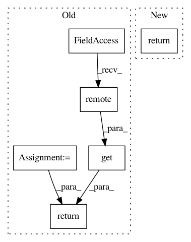

d7c95a4a9065cbad73901b4c1de087837e260316,python/ray/serve/api.py,Client,get_handle,#Client#Any#Any#,352
Before Change
self._controller.get_all_endpoints.remote()):
raise KeyError(f"Endpoint "{endpoint_name}" does not exist.")
routers = list(ray.get(self._controller.get_routers.remote()).values())
current_node_id = ray.get_runtime_context().node_id.hex()
try:
router_chosen = next(
filter(lambda r: get_node_id_for_actor(r) == current_node_id,
routers))
except StopIteration:
logger.warning(
f"When getting a handle for {endpoint_name}, Serve can"t find "
"a router on the same node. Serve will use a random router.")
router_chosen = random.choice(routers)
return RayServeHandle(
router_chosen,
endpoint_name,
)
def start(detached: bool = False,
http_host: str = DEFAULT_HTTP_HOST,
After Change
if endpoint_name not in self._handle_cache:
handle = RayServeHandle(self._controller, endpoint_name, sync=True)
self._handle_cache[endpoint_name] = handle
return self._handle_cache[endpoint_name]
def start(detached: bool = False,
http_host: str = DEFAULT_HTTP_HOST,
In pattern: SUPERPATTERN
Frequency: 3
Non-data size: 6
Instances
Project Name: ray-project/ray
Commit Name: d7c95a4a9065cbad73901b4c1de087837e260316
Time: 2020-11-17
Author: simon.mo@hey.com
File Name: python/ray/serve/api.py
Class Name: Client
Method Name: get_handle
Project Name: ray-project/ray
Commit Name: d5a7c53908018c72a663859990db016d86a4ac5e
Time: 2020-09-15
Author: amogkam@users.noreply.github.com
File Name: python/ray/util/sgd/torch/torch_trainer.py
Class Name: TorchTrainer
Method Name: apply_all_operators
Project Name: ray-project/ray
Commit Name: d5a7c53908018c72a663859990db016d86a4ac5e
Time: 2020-09-15
Author: amogkam@users.noreply.github.com
File Name: python/ray/util/sgd/torch/torch_trainer.py
Class Name: TorchTrainer
Method Name: apply_all_workers